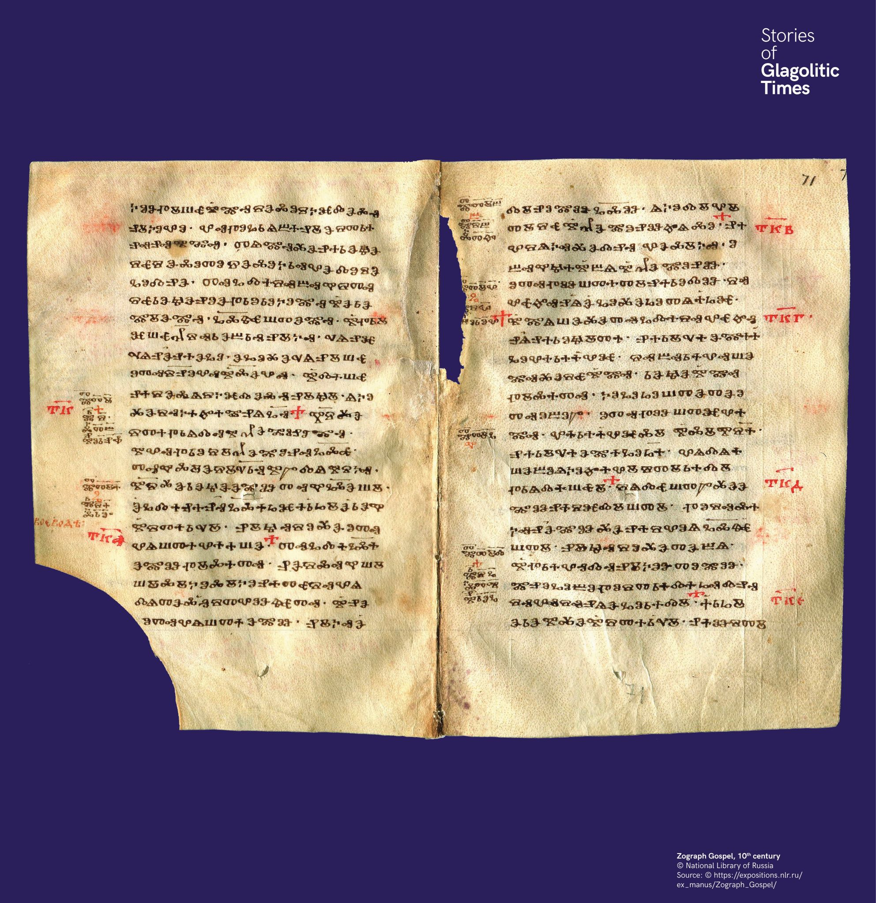

Glosszák a Zograf-evangéliumban
A Zograf-evangélium glosszái a glagolita és cirill írás együttélésének bizonyítékai. A glosszák a kéziratok margóján található magyarázó szavak.


A Zograf-evangélium glosszái a glagolita és cirill írás együttélésének bizonyítékai. A glosszák a kéziratok margóján található magyarázó szavak.
Глосите в Зографското евангелие са доказателство за съвместното съществуване на глаголицата и кирилицата.